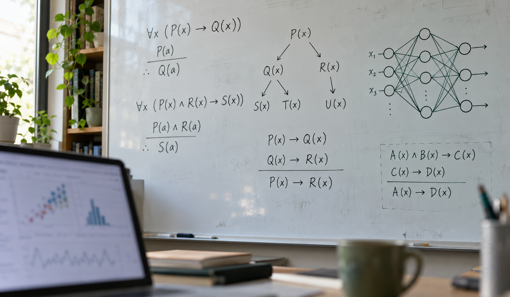
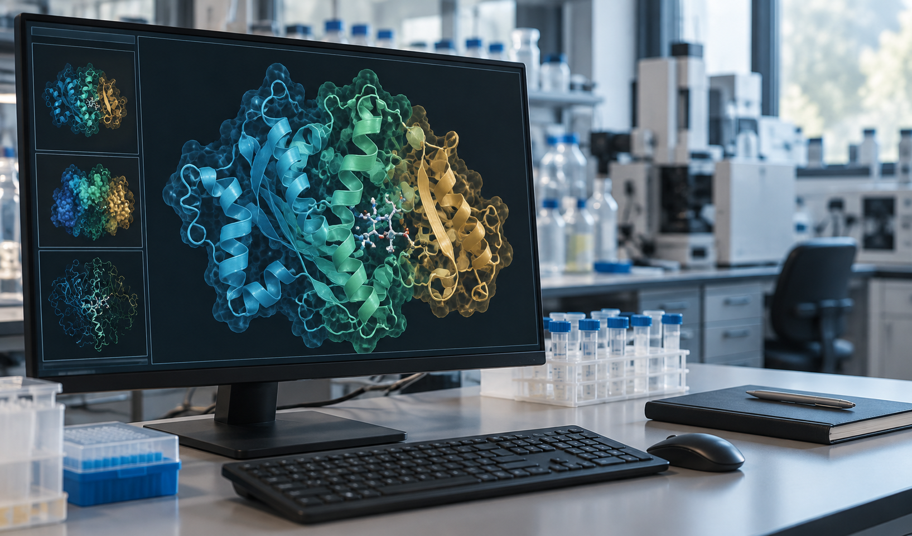

Research
Our research focuses on neuro-symbolic AI, particularly integrating neural models (e.g., LLMs and foundation models) with structured knowledge and principled reasoning to make AI systems more understandable and reliable in complex, uncertain, and evolving environments.
Semantic & Knowledge
We study how meaning and knowledge can be represented, organized, and integrated with neural models. Our interests span knowledge graphs, ontologies, and semantic structures, as well as how LLMs and foundation models acquire and use knowledge. Geometric and graph-based approaches help capture hierarchical and relational structure.
- Semantic and geometric representation learning
- Knowledge graphs, ontologies, and structured knowledge
- Knowledge-enhanced LLMs and foundation models
Neurosymbolic Reasoning

We investigate how neural models can be combined with formal logic, structured constraints, and principled inference to support reliable and explainable reasoning. A particular focus is AI agents that can integrate evidence, justify their conclusions, and revise their reasoning as information changes.
- Formal logic and explainable reasoning for AI agents
- Neurosymbolic learning and structured inference
- Multi-step reasoning, verification, and uncertainty
Autonomous Discovery

We explore how AI agents can use knowledge and reasoning to pursue open-ended tasks, connect evidence, and support new insights. Applications include AI-driven scientific discovery, decision-making, and other knowledge-intensive tasks, with an emphasis on reliable behavior in uncertain and evolving environments.
- Knowledge-grounded agents for scientific discovery
- Agentic workflows for evidence integration and decision-making
- Reliable action in complex, uncertain, and evolving environments